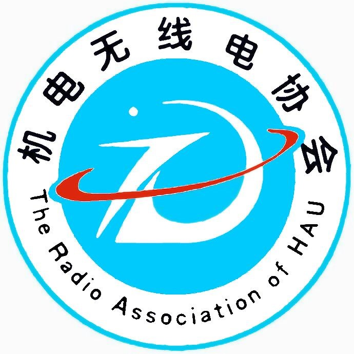
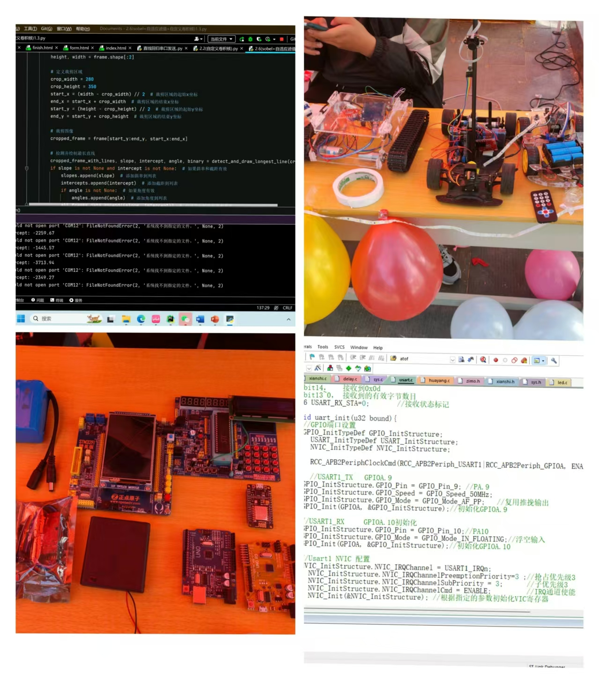
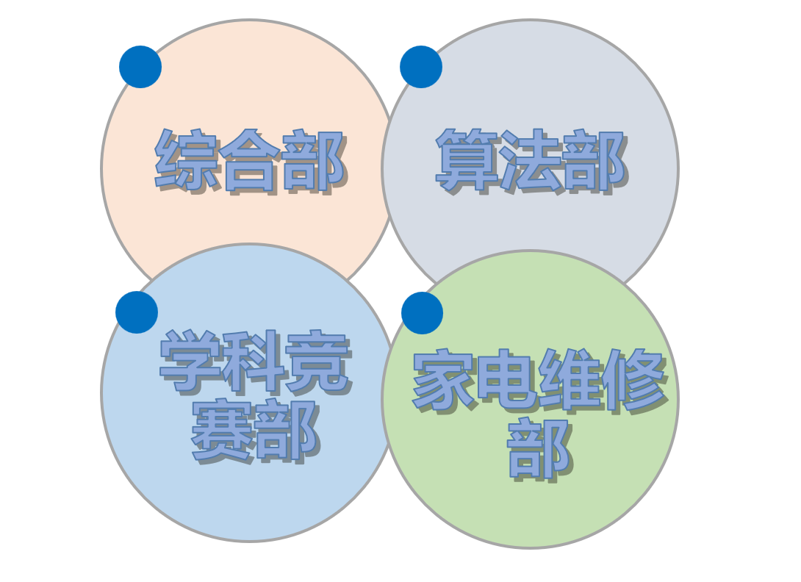
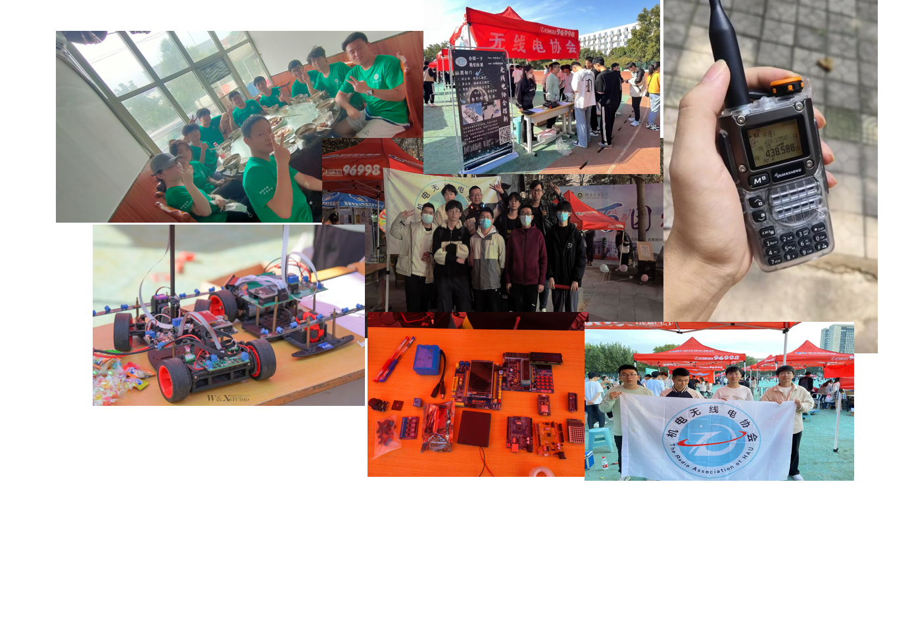

机电工程学院无线电协会正式向各位同学发出诚挚邀请：
欢迎加入无线电协会——这是一个充满机遇的平台，让你在这里学习知识、增长能力、提升个人素养。成立于1992年的无线电协会，是一个充满活力、团结友爱的大家庭。
在社团内，我们致力于营造浓厚的科技创新氛围，特别注重培养社团成员的科技创新素质。我们组织和协助成员参与各类课外科技活动，旨在优化大家的实践能力和创新思维。在这里，你将有机会接触到前沿的技术，与志同道合的朋友一起探索无线电世界的无限可能。我们期待你的加入，共同创造属于我们的科技未来！


无线电协会，以兴趣为驱动，致力于学习与创新，我们在这里不仅学习编程，如Python、C/C++等语言，
还涉猎各类硬件知识。我们玩转单片机，如arduino、stm32等，
将这些技术融合在一起，探索科学的奥秘，用智慧开启世界的大门。在这里，我们行程丰富、通顺，共同迈向技术的新高峰。
在无线电协会，有综合部，算法部，学科竞赛部，家电维修部四个部门，各个部门的相互协作，为成员提供了一个全方位、多层次的学习进步平台。这里，各个部门相互补充，相互促进，确保每位成员都能在技术探索和技能提升的道路上不断前进。


来到无线电协会，你将发现一个充满热情与活力的群体。如果你对硬件、软件或是业余无线电等有着浓厚的兴趣，那么机电工程学院无线电协会正是你寻找志同道合朋友的地方。在这里，你可以：结识新伙伴，探索新技术，参与实践活动，拓宽视野。